如何快速搭建一个全功能 GPS 追踪系统，追踪女朋友的实时位置
0X00 前言
Traccar 是一个开源的 GPS 跟踪系统。此存储库包含基于 Java 的后端服务。它支持 170 多种 GPS 协议和 1500 多种型号的 GPS 跟踪设备。Traccar 可以与任何主要的 SQL 数据库系统一起使用
开源地址：https://github.com/traccar/traccar
官网地址：https://www.traccar.org/
这款开源的 GPS 追踪系统，实测后效果不错，精度在10米左右。
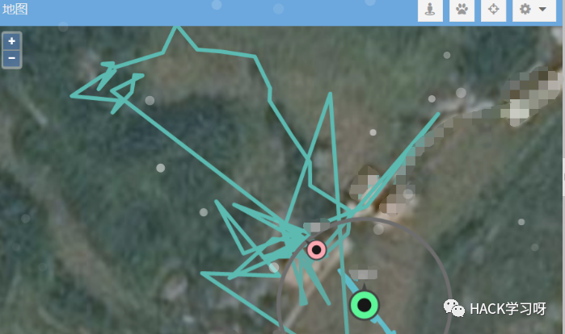
以及官网支持手机或者GPS的定位器相应的型号
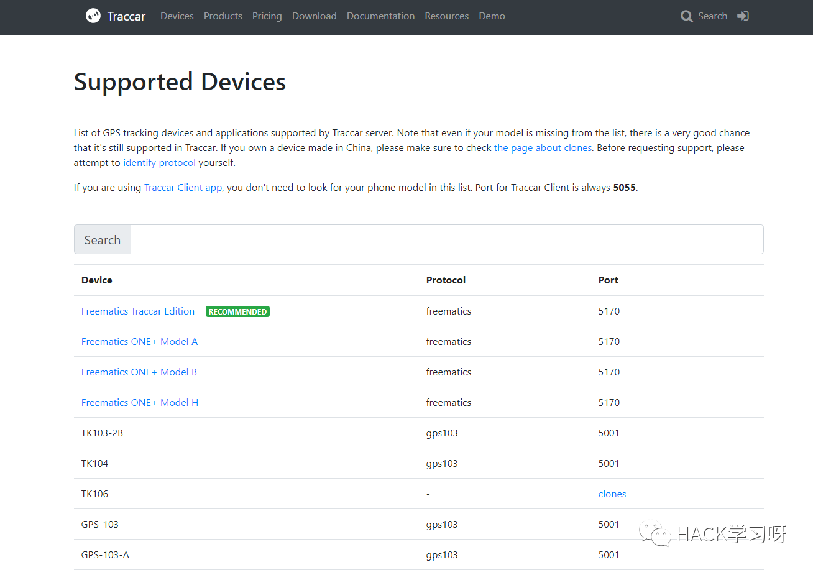
0X00 Traccar 是什么？
Traccar 是一个免费的开源现代GPS跟踪系统，支持170多种GPS协议和超过1500种型号的GPS跟踪设备。
可以满足
出租车，货车，卡车/拖车
农用设备，车队，集装箱，船舶，全地形车
专人跟踪，个人车辆，手机
等追踪定位需求。
Traccar 的功能非常多，可切换卫星、街景地图，追踪运动轨迹，追踪行程，停留点等
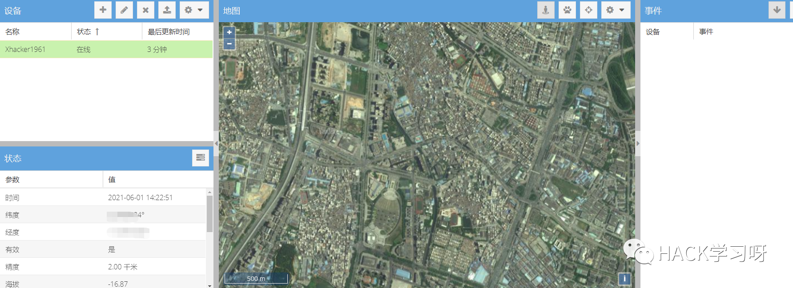
追踪行程
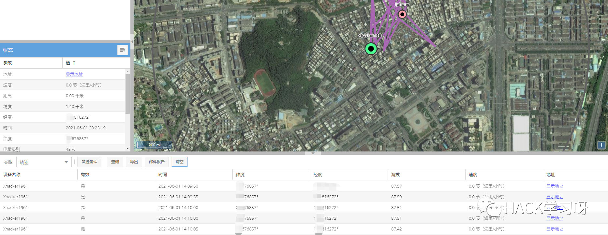
停留点
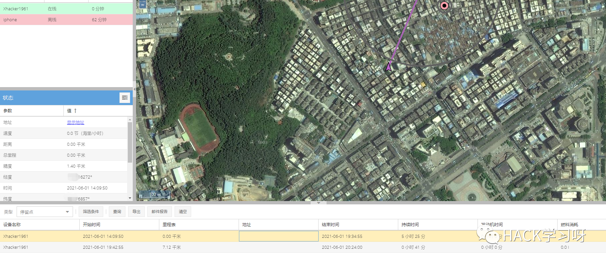
0X01 搭建 Traccar 服务端
我用的是阿里云香港ECS的云服务器，教程算是非常傻瓜了，需要有那么一点Linux基础，不懂的可以楼下问或者度娘谷歌，安装好之后就可以登陆了
使用宝塔面板或者Centos等其他Linux或者Windows都是可以
只需要有JAVA环境和MYSQL环境即可
Ubuntu 16.04 x64系统，1 CPU，25 GB SSD
先使用SSH连接到云服务器，然后APT-GET更新
apt-get update安装 Java 和 MySQL 服务器
apt-get install unzip default-jre mysql-server中途会让设置 MySQL 密码（回车则默认为 root ，为了安全建议自己设置）
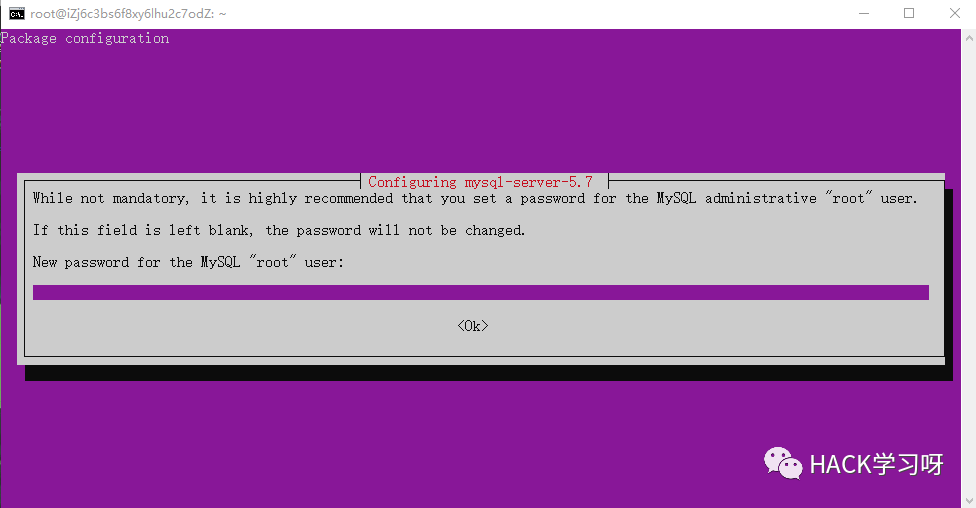
再次输入确认密码
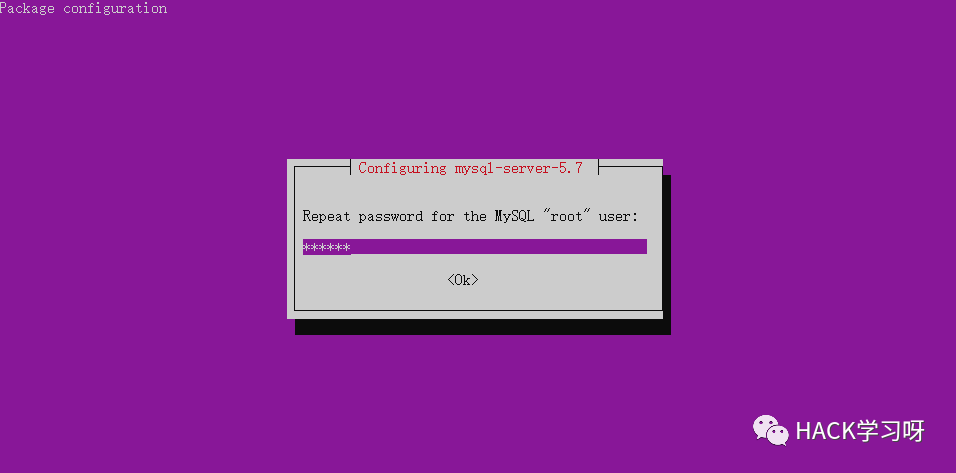
创建一个新的数据库 “traccar” ，使用上一步设置的 MySQL 密码登陆
echo "create database traccar" | mysql -u root -p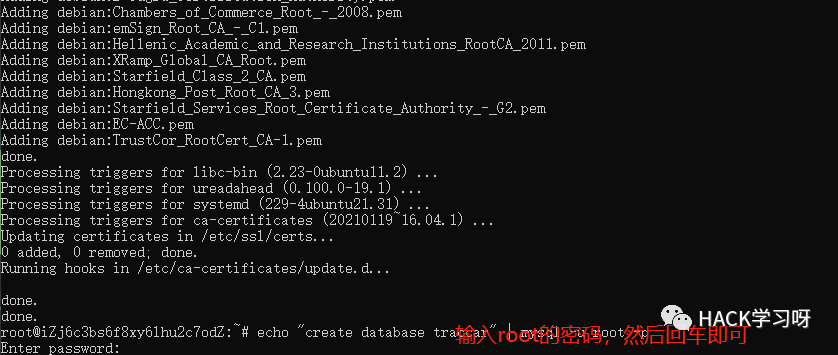
下载 Traccar 安装压缩包
wget https://github.com/traccar/traccar/releases/download/v4.12/traccar-linux-64-4.12.zip解压压缩包
unzip traccar-linux-*.zip安装 Traccar 服务端
./traccar.run创建配置文件 “traccar.xml”
vim traccar.xml编辑完按ESC，然后输入:wq，保存退出即可
输入内容（红色区域换成自己 MySQL 密码）
<?xml version='1.0' encoding='UTF-8'?>
<!DOCTYPE properties SYSTEM 'http://java.sun.com/dtd/properties.dtd'>
<properties>
<entry key="config.default">./conf/default.xml</entry>
<entry key='web.port'>8082</entry>
<entry key='geocoder.enable'>false</entry>
<entry key='database.driver'>com.mysql.jdbc.Driver</entry>
<entry key='database.url'>jdbc:mysql://localhost/traccar?allowMultiQueries=true&autoReconnect=true&useUnicode=yes&characterEncoding=UTF-8&sessionVariables=sql_mode=''</entry>
<entry key='database.user'>root</entry>
<entry key='database.password'>你的MySQL密码</entry>
<entry key='server.timeout'>120</entry>
</properties>
PS：上述8082端口也可以自行设置，以及数据库用户名和密码，如果是云厂商的服务器，记得在云面板放行开启的端口哦！
替换默认配置文件
cp traccar.xml /opt/traccar/conf/启动 Traccar服务
systemctl start traccar检查 Traccar 是否正确启动
systemctl status traccar如果看到active即表示启动成功
浏览器输入 (http://服务器IP:8082)，语言选择中文即可
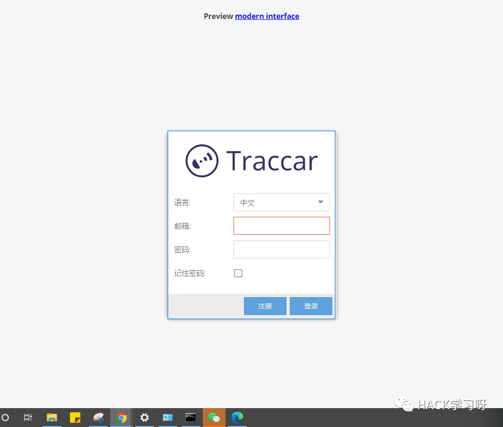
初始用户名和密码都是 ： admin
（为了安全登录后，登录后记得更改密码）
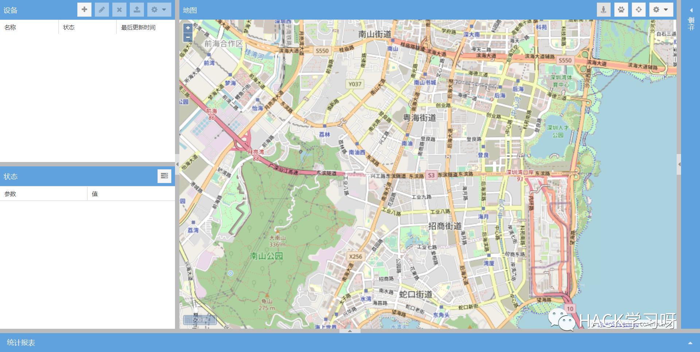
添加设备和设备编码
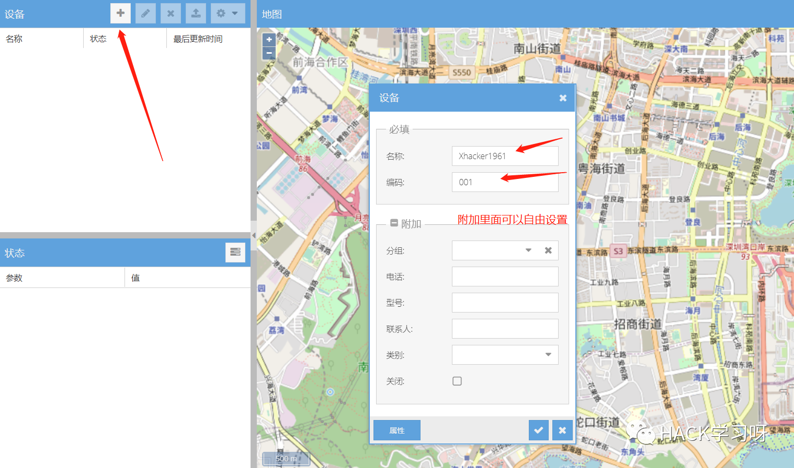
0X03 安装 Traccar 客户端
安卓的可以直接Google Play 商城搜索 traccar下载或者apkcombo.com上搜 traccar
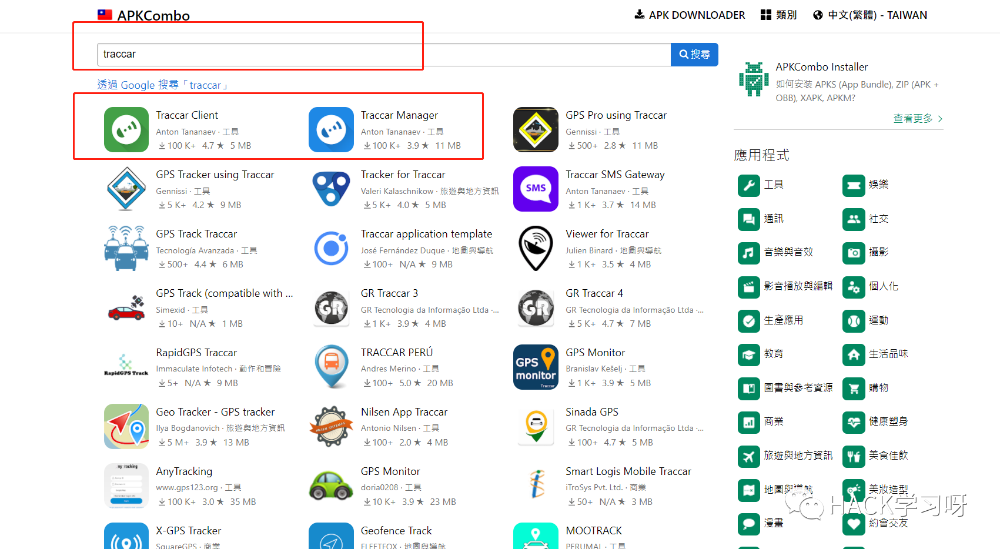
Andorid和IOS均可以上官网下载安装
https://www.traccar.org/client/
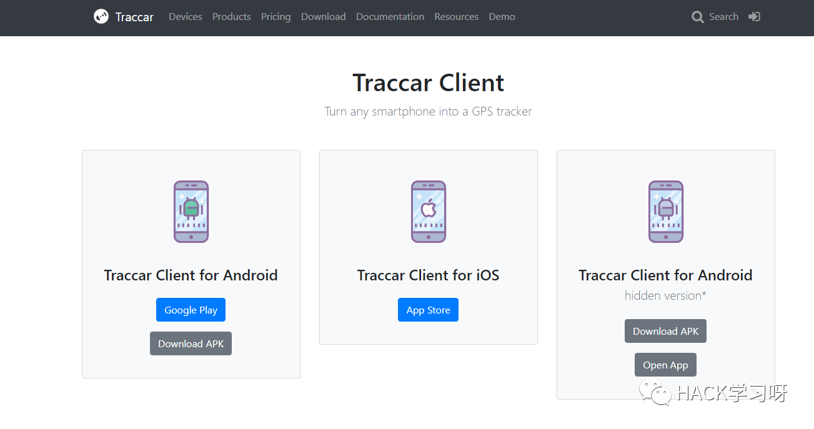
安装打开，给予权限
然后设置
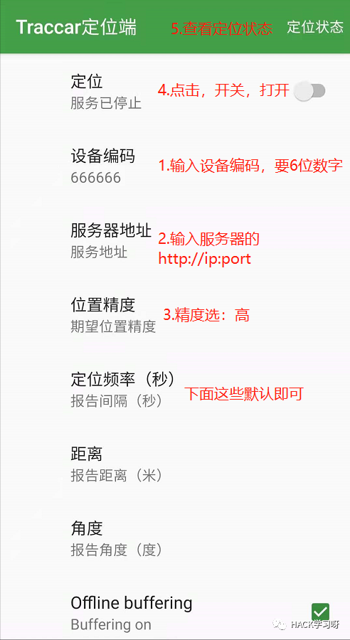
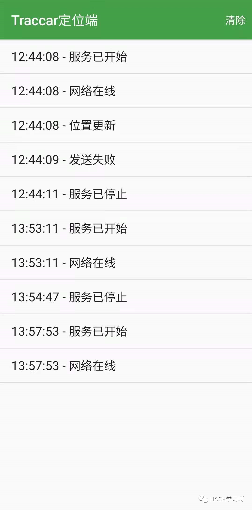
然后打开 Traccar Web管理界面点击跟踪就可以定位到你的位置了
Web端查看设备信息
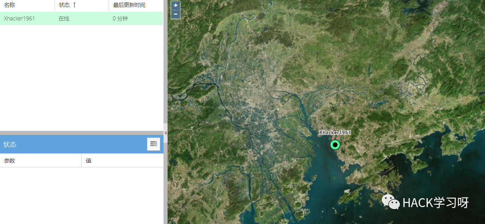
点击设备名称
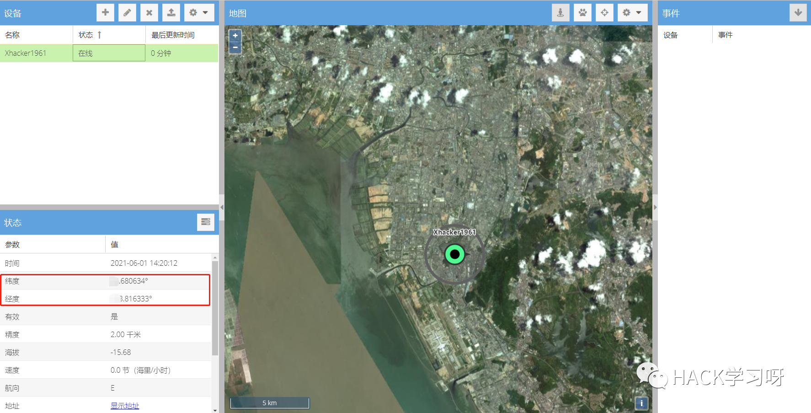
地图服务器选择
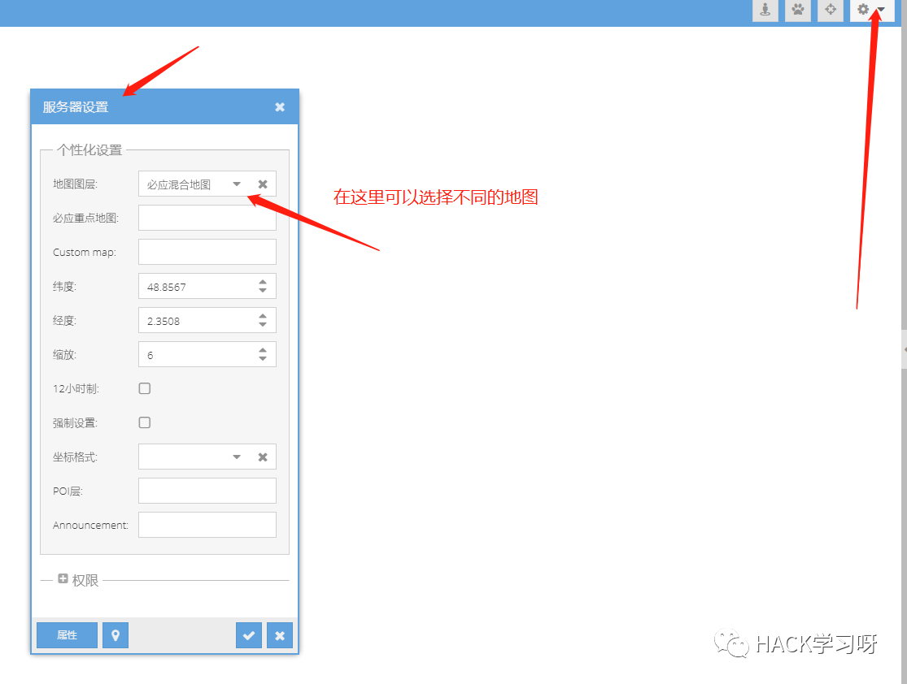
管理界面还有很多设置，小伙伴们可以自行探索。
给女朋友装上再也不怕女朋友出门了 ，实时监控着。
，实时监控着。

推荐阅读：
本月报名可以参加抽奖送暗夜精灵6Pro笔记本电脑的优惠活动

点赞，转发，在看